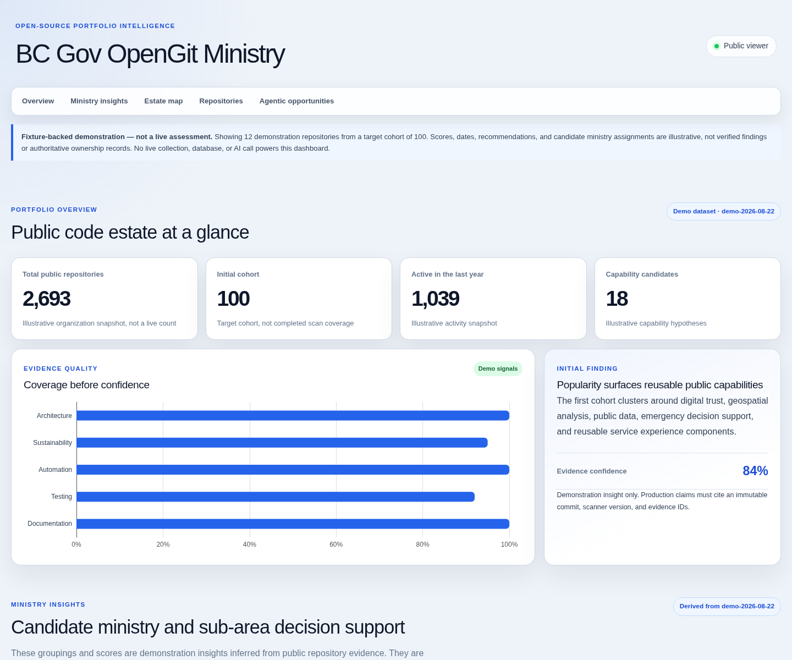
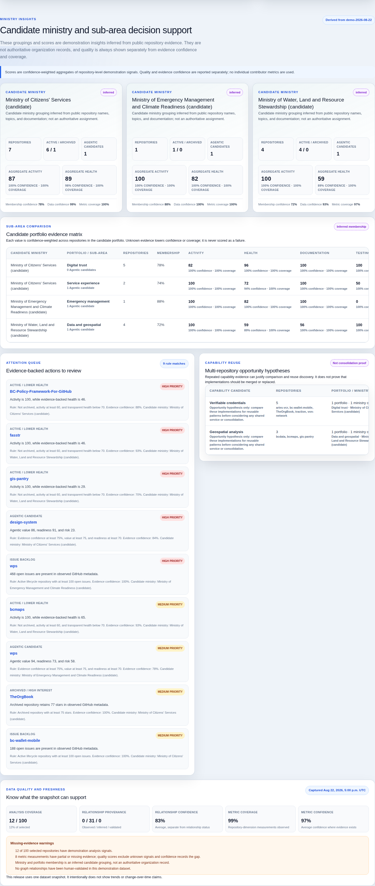
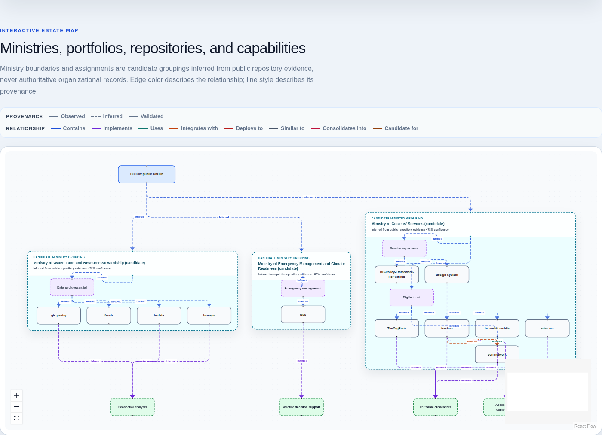
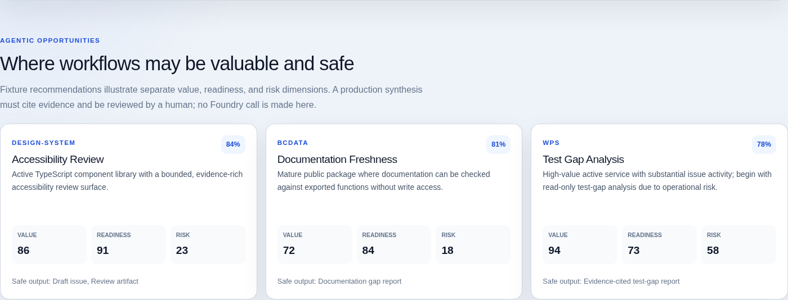
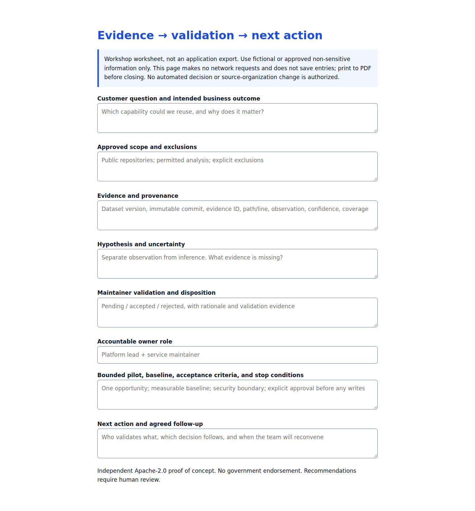
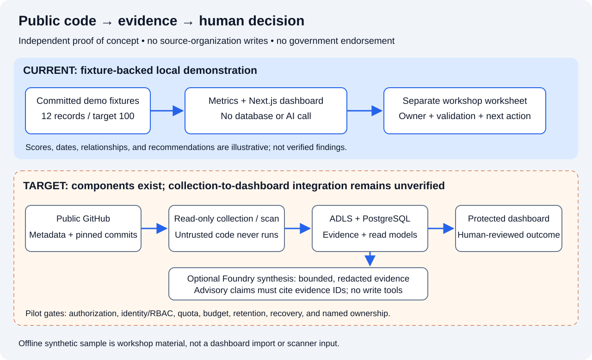

Fixture-backed demonstration, not a live assessment. Twelve demonstration repositories, target cohort 100. Scores, dates, candidate ownership, and recommendations are illustrative. Independent project; no government endorsement.
These are actual local production-mode dashboard captures. The separate worksheet is a static facilitator artifact. The video is a five-minute screenshot slideshow with generated narration, not a recording of live interaction or a human rehearsal.
Download video · Read full narration transcript. Each chapter shows its narration as a caption; pauses allow discussion. Open the full-size images below for legible portfolio details. For reliable captions, serve the docs over localhost HTTP rather than opening a file URL.






Independent presenter rehearsal, cloud deployment, live read-model integration, catalog schema validation, and named support ownership remain pending. The catalog URL supplied for preparation returned 404; metadata is provisional.